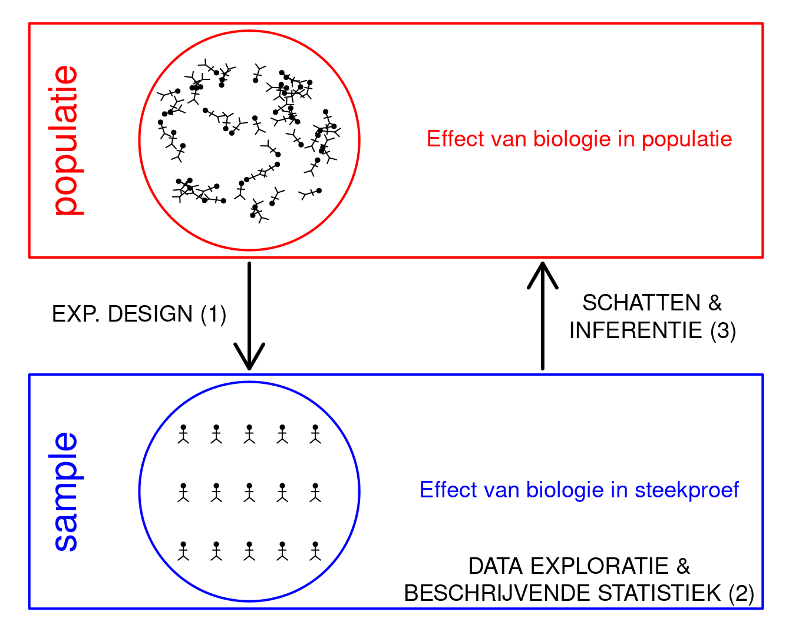

Biostatistiek 2022: partim Univariate Statistiek

Situering
Deze cursus bouwt verder op de basis cursus statistiek die werd gedoceerd in 2de bachelor biologie aan de Universiteit Gent. De cursus focust op essentiële statistische concepten en methoden om inzicht te verwerven uit empirische data uit de levenswetenschappen. Het is een toegepaste cursus statistiek waarin de data centraal staan. We starten hierbij steeds bij het design van de studie en een data exploratie. Vervolgens worden de data statistisch gemodelleerd. Hierbij ligt de focus op de link tussen lineaire regressie en variantie analyse. Deze technieken kunnen worden samengebracht in het algemene lineaire model. De concepten en methoden worden via case-studies aangebracht. Hierbij zullen we steeds focussen op de concrete onderzoeksvraag en hoe we deze kunnen vertalen in hypotheses met betrekking tot lineaire combinanties van de parameters in het model. Na de introductie van het algemene lineaire model zullen we dieper ingaan op belangrijke concepten van experimenteel design.
Inhoud
Hoorcolleges
Algemeen lineair model:
- Lecture 2-3 : html, [PDF]
- Lecture 4 factoriële designs: html, [PDF]
- Lecture 5, Booster Sessie: additief model html, [PDF]; interacties - diagnostiek - contrasten - factoriële designs, [PDF]
- Lecture 6: Experimental Design I, [PDF]
- Lecture 7: Experimental Design II, [PDF]
Werkcolleges
- Practicum 1:
- Voorbeeld two-sample t-test: html
- Voorbeeld anova: html
- Voorbereiding 1: html
- Voorbereiding 2: html
- Voorbereiding 3: html
- Oplossing Voorbereiding 1: html
- Oplossing Voorbereiding 2: html
- Oplossing Voorbereiding 3: html
- Oefening Practicum 1 Lineair model: html
- Oplossing Practicum 1 Lineair model: html
- Practicum 3:
- Oplossing Algemeen lineair model - Oefening 2: html
- Practicum 4 - Experimenteel design - krachtanalyse:
- Practicum 5 - Experimenteel design - blocking en pseudoreplicatie: